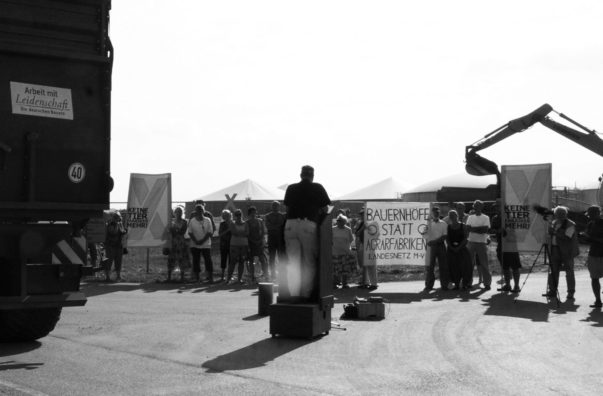

Arbeit, die Leiden schafft

„Edel sei der Mensch, Hilfreich und gut!“
Die Deutsche Veredelungswirtschaft soll die modernste und tierfreundlichste in Europa werden, verkündete 2011 das amtierende Bundeslandwirtschaftsministerium. Dort wurde erkannt: Die gesellschaftlichen Anforderungen an Tierhaltungssysteme steigen.
Wieso denn das auf einmal? Ein Blick zum Tollensetal im schönen Gesundheitsland MV kann das klären. Am Beispiel der dortigen kleinen Gemeinde Alt Tellin wird deutlich, wie sich Umbruchprozesse entwickeln können.
Zur Erinnerung: Wie üblich im ländlichen Raum der vergangenen Republik der Brüder und Schwestern wurde auch hier in einem „Kombinat Industrieller Mast“ so manches Schwein gefüttert. Mit der Abwicklung von DDR-Industrie (Ruinen schaffen ohne Waffen) wucherte eine blühende Landschaft um die Reste der Stallbauten. Ein Rückzugsort für Fledermäuse, Wildbienen und Rebhühner. Drumherum immer intensiver bewirtschaftete riesige Ackerflächen für goldenen Raps in der ansonsten tierärmer gewordenen Landschaft. Doch der geschwundene Fossilölbestand ließ Kunstdüngerpreise steigen und Sehnsucht nach Gülle wachsen. Zeitgleich mit der Ankunft westlicher Landmaschinen expandierten bodenungebundene Massentierhaltungsunternehmen aus den Ländern der untergehenden Sonne in östlichen Freiraum. Verdrängt durch Umweltauflagen, wegen verseuchter Grundwässer...
Die Geschäftsführerin des hiesigen Rinderbetriebes Silvia Ey (Vizebürgermeisterin Alt Tellins) wurde Referentin für Tierproduktion in der Hauptgeschäftsstelle des Bauernverbandes, und der Niederländer Kees Hoogendoorn übernahm die Rinderzucht Alt Tellin. 2006 vermittelte sie über die Landwirtschaftsberatungsgesellschaft LMS den berüchtigten Schweineproduzenten Adrianus Straathof zur Alt Telliner Gemeindevertretung. Das weitere ist eigentlich bekannt. Gegen den erklärten Willen der Mehrheit der Einwohner hat das Staatliche Amt für Landwirtschaft und Umwelt dem zwielichtigen Investor aus Gelderland das Privileg des vorzeitigen Baubeginns gewährt. Sie begründete es mit einem vorhandenen öffentlichen Interesse und der Weiterführung der Standortinitiative „MV tut gut“.
Schon 1991 publizierte das ifo Institut für Wirtschaftsforschung e.V.: „Eine angemessene Nutzung der landwirtschaftlichen Ressourcen kann nur gewährleistet werden, wenn von den Strukturleitbildern für die alte Bundesrepublik, nämlich dem bäuerlichen Familienbetrieb, Abstriche gemacht und möglichst viele LPGen in wettbewerbsfähige Unternehmen umstrukturiert werden.“
Und so produziert der Familienbetrieb Straathof Holding seit gut einem Jahr am Standort Alt Tellin unter dem Slogan „Begeisterung für Ferkel“. Der Widerstand der Einwohner und ihrer Bündnispartner gegen Europas größte Ferkelfabrik konnte die Inbetriebnahme dieser Massentierhaltungsanlage zwar aufschieben, aber nicht wirklich verhindern. Ihr Erfolg reicht jedoch weit über die Gemeindegrenzen hinaus. Denn die genehmigte Wiederinbetriebnahme der DDR-Mega-Schweinemast in Haßleben darf noch nicht starten. Der dortige niederländische Investor muss abwarten, wie die Gerichte über eingehende Klagen entscheiden, bevor er mit dem Bau beginnen kann. Die außerparlamentarische Opposition der Bürgerinitiativen hat dazu geführt, dass sich Klagemöglichkeiten gegen solche Anlagen verbessert haben. Die mediale Begleitung des Widerstandes gegen den Bau der Ferkelfabrik am Tollensetal ist daran nicht ganz unschuldig.
Rosa Kreuze wurden ein Zeichen der Hoffnung für den Ausstieg aus der Massentierhaltung.
So manch einstiger Befürworter von „moderner Landwirtschaft“ ist inzwischen aufgewacht und hat erkannt: „Herr, die Not ist groß! Die ich rief, die Geister werd ich nun nicht los.“ Sogar der Alt Telliner Bürgermeister, dessen eingeschlagene Fensterscheiben seiner Gaststätte Storchenbar vom Landtag MVs für eine Kampagne gegen friedliche Bürgerinitiativen missbraucht wurden, wurde ein Betroffener der Gülleproduktion. Unmittelbar hinter seinem Wohnhaus konnte der Rinderhalter Hoogendoorn im Windschatten der Ferkelfabrik seinen Bestand auf 1.000 Tiere aufstocken, befürwortet durch Gemeindevertreter, die annahmen, damit die Ausbreitung der inzwischen in Verruf geratenen Schweineanlage zu verhindern. Doch kaum hatte Straathofs Tierproduktion begonnen, stellte er schon einen Erweiterungsbauantrag. Seine 10.000 Sauen sind produktiver geworden, sie würden 300.000 statt 250.000 Ferkel pro Jahr liefern. Zur weiteren Optimierung seiner Gewinnerwartung will er 1.000 weitere Turbosauen einstallen und 15.000 zusätzliche Ferkelplätze anbauen.
Aber die Bundesregierung hat auf die gewachsene Zahl der „Wir haben Agrarindustrie satt“-Demonstranten im Vorfeld der Grünen Woche in Berlin reagiert und mit der Novellierung des Bundesbaugesetzbuchs auch der Gemeindevertretung Alt Tellins ermöglicht, dem Antrag Straathofs einstimmig ihr Einvernehmen zu verweigern. Selbst Vizebürgermeisterin Ey, inzwischen in der Geschäftsstelle des Bauernverbandes auch für Tiergesundheit zuständig, stimmte gegen die Erweiterung. Ihr Verbandsvorsitzender Rainer Tietböhl dagegen betonte kürzlich auf der Tagung der Friedrich Ebert Stiftung „Tierschutz in der Nutztierhaltung“ vom Podium herab: jede Investition in Stallneubauten sei eine Investition in Tierschutz. Die Bauern im Publikum forderten vom neben ihm sitzenden Minister Backhaus Rechtssicherheit für Stallneubauten. Auf meine Frage nach Freilandhaltung wurde mit dem Gespenst der Pandemie geantwortet. Doch Bio-Energievorreiter Deutschland ist mit nur 1% Anteil an der Weltagrarfläche Schweineexportweltmeister. Das geht nur mit bodenungebundenen Konzentrationsanlagen und nur, weil unser Tierschutzgesetz es zulässt, Bewegungsbedürfnisse der Nutztiere einzuschränken.
In Schweden aber wurde schon ein Jahr vor dem deutschen Mauerfall ein Kastenstandverbot beschlossen. Der prognostizierte Ferkeltod durch quetschende Muttertiere ist bei freien Buchten von über 5 Quadratmetern ausgeblieben. Im Kontrast dazu hier der Bericht eines Alt Telliner Einwohners, der sich unter die zur Besichtigung der hiesigen Ferkelfabrik eingeladenen Gemeindevertreter gemischt hatte:
„Und als ich dann einen Blick durch die Scheibe in einen der äußeren Ställe getan habe: wurde mir schlecht! Ich sah nur eingepferchte Fleischberge, eingeklemmt in Metallrohre und mit viel Farbe besprühte Schweine.
Es ist wirklich unerträglich, mit eigenen Augen zu sehen, was diesen lebendigen Tieren angetan wird.“
Der steigende Ferkelbedarf machte Deutschland auch zum Ferkelimportweltmeister! Und so besitzt die Straathof-Holding inzwischen sogar in Schwaben eine Fabrik mit 3.000 Muttertieren.
Die Hoffnung der Lobbyisten des Agrobusiness, an die östlichen Schweineproduktionszahlen der Vorwende anzuknüpfen, ist ungebrochen. Zur Produktionssteigerung dieses Schweinesystems scheint unser dünn besiedeltes MV-tut-gut-Land immer noch bestens geeignet. Die Vergabekriterien MVs für die Pacht von rund 80.000 ha landwirtschaftlicher Nutzfläche wurden daran gekoppelt, Fleisch und Gülle zu produzieren. "Konkrete Ziele der Verpachtung waren und sind", betont Landwirtschaftsminister Dr. Till Backhaus, "die Veredlungswirtschaft zu stärken...“. Das hat zu Investitionen von rund 57 Mio. Euro geführt, der größte Teil davon ging mit 45 Mio. Euro in die Tierhaltung, auch in die Straathofsche Ferkelfabrik.
Aber es kann noch besser kommen: Die Afrikanische Schweinepest ASP ist im Anmarsch. Terrorwarnungen schränken Bürgerrechte ein. Das geplante Schweinehaltungsverbot in Russland für kleinere Landwirtschaftsbetriebe und Private (ein Drittel der nationalen Schweineproduktion) bereitet den Boden für die expandierende Veredlungsindustrie im Osten.
Den Masterplan für das Veredeln im schönen MV hat Minister Backhaus schon im Frühjahr gestartet. Der soll sich im Endstadium seiner kreativ-konstruktiven redaktionellen Phase befinden, damit er im Herbst öffentlich überreicht werden kann. Das wird überschattet durch eine Strafanzeige gegen den Minister, dem Körperverletzung vorgeworfen wird. Im Gegensatz zu den weggesperrten Schweinen lässt die übliche Unschuldsvermutung ihm jegliche Bewegungsfreiheit.
Dieser Text erschien im September 2013 in Ausgabe 72 der STADTGESPRÄCHE ROSTOCK